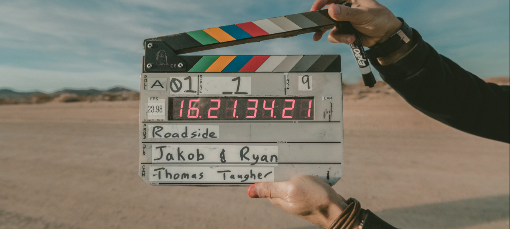

Mes Divertissements
Musique
La musique m'accompagne dans chaque ligne de code, favorisant ma concentration et boostant mon inspiration au quotidien.

Films
Passionnée par le septième art, j'apprécie particulièrement les films de science-fiction et les thrillers psychologiques qui poussent à la réflexion.
Séries
Des séries technologiques comme Mr. Robot aux productions plus légères, c'est mon moyen favori pour décompresser après une longue journée.